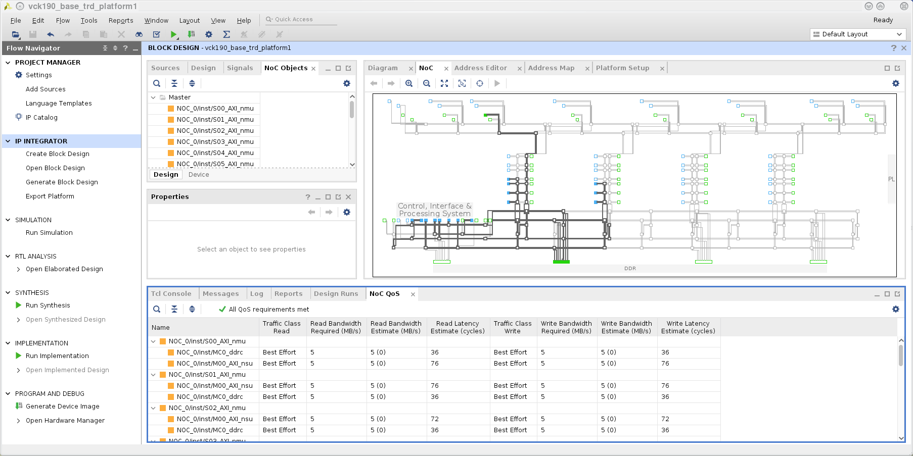
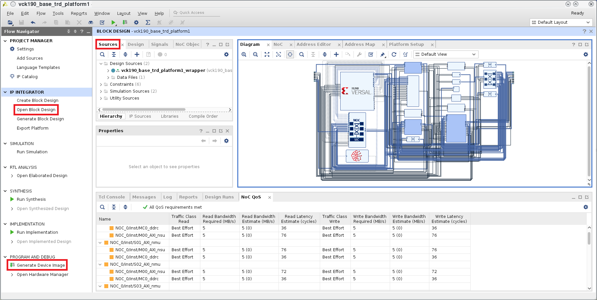

5. Build the Vivado Design¶
5.1. Prerequisites¶
Reference Design zip file
Vivado Design Suite 2019.2
5.2. Build Flow Tutorial¶
Tip
You can skip this tutorial and move straight to the next tutorial if desired. A pre-built XSA file is provided at $working_dir/vck190_base_trd_platform1/platform/vck190_base_trd_platform1/hw/vck190_base_trd_platform1.xsa
Download Reference Design Files:
Skip the following steps if the design zip file has already been downloaded and extracted to a working directory
Download the VCK190 Base Targeted Reference Design ZIP file
Unzip Contents
The directory structure is described in the Introduction Section
Generate Device Image and XSA:
Enable Versal device support
To enable Versal device support, you need to create two tcl initialization scripts, one for Vivado and one for HLS. Add the following line to each of the tcl scripts:
enable_beta_device *
The initialization tcl script for Vivado shall be placed at:
Linux: $HOME/.Xilinx/Vivado/Vivado_init.tcl
Windows: %APPDATA%/Roaming/Xilinx/Vivado/Vivado_init.tcl
Similarly, the initialization tcl script for HLS shall be placed at:
Linux: $HOME/.Xilinx/HLS_init.tcl
Windows: %APPDATA%/Roaming/Xilinx/HLS_init.tcl
Open the Vivado GUI.
On Windows, open Vivado by navigating to Start > Xilinx Design Tools > Vivado 2019.2. In the tcl console type:
cd $working_dir/vck190_base_trd_platform1/vivado source scripts/main.tcl
On Linux, at the command prompt enter:
cd $working_dir/vck190_base_trd_platform1/vivado vivado -source scripts/main.tcl
A Vivado cockpit as shown below will open with vck190_base_trd_platform1 project populated.
In the Flow Navigator pane on the left-hand side under IP Integrator, click on Open Block Design. An IP Integrator (IPI) block design (vck190_base_trd_platform1.bd) becomes visible that contains the Control, Interface and Processing System (CIPS) IP, NOC IP, AXI Performace Monitors (APM), MIPI CSI capture pipeline and HDMI Tx display pipeline.
To view the Platform interfaces that are enabled for Vitis compiler to stitch in accelerators, on the tool bar at the top click on Window > Platform Interfaces. Platform interfaces are enabled under the following IPs
clk_wiz: Clocks used to drive clock inputs on the accelerator.
smartconnect_gp2: AXI Memory Mapped master ports to drive the accelerator control port.
smartconnect_accel: AXI Memory Mapped slave ports driven by the accelerator data port.
Tip
For more information on how to setup Platform Interfaces refer to Section - Configuring Platform Interface Properties in https://www.xilinx.com/support/documentation/sw_manuals/xilinx2019_2/ug1393-vitis-application-acceleration.pdf
In the Flow Navigator pane on the left-hand side under Program and Debug, click on Generate Device Image. The device image (pdi) for the design will be generated and available at $working_dir/vck190_base_trd_platform1/vivado/project/vck190_base_trd_platform1.runs/impl_1/vck190_base_trd_platform1_wrapper.pdi.
After Device Image Generation completes successfully a window pops up. Click on Cancel
To create the XSA, on the Tcl Console type the following command.
write_hw_platform -force -include_bit -file ./project/vck190_base_trd_platform1.sdk/vck190_base_trd_platform1.xsa
The file vck190_base_trd_platform1.xsa will be available in $working_dir/vck190_base_trd_platform1/vivado/project/vck190_base_trd_platform1.sdk. It will be used as an input when building the Vitis Platform.
{kind=link}
{kind=link}
{kind=link}